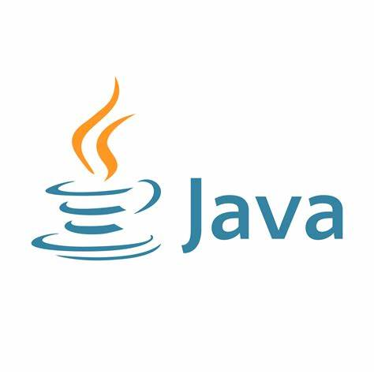
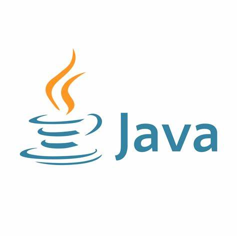
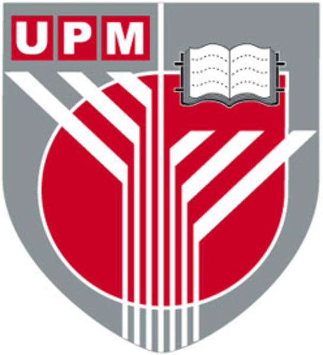
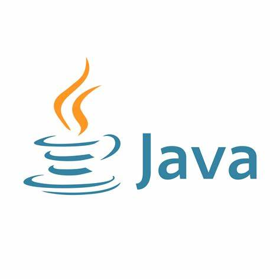

and Java,
 as well as development and management. Experienced in customer service and retail, demonstrating excellent communication,
teamwork, and problem-solving skills in fast-paced environments.
and Java,
 as well as development and management. Experienced in customer service and retail, demonstrating excellent communication,
teamwork, and problem-solving skills in fast-paced environments.
A highly motivated and detail-oriented Software Engineering student at University Putra Malaysia (UPM)
with a strong academic background, earning a CGPA of 3.88 and a place on the Dean’s List.
Proficient in programming languages such as Python and Java,
 as well as development and management. Experienced in customer service and retail, demonstrating excellent communication,
teamwork, and problem-solving skills in fast-paced environments.
Strong leadership abilities, having successfully organized a large-scale futsal tournament and developed a prototype for an inventory management system. Passionate about integrating technology into business operations to enhance efficiency and user experience. Eager to apply technical skills in real-world projects and gain industry experience in software development and technology-driven solutions.
I am deeply passionate about leveraging technology to enhance business operations and improve user experiences. I believe that software should not only be functional but also intuitive and impactful. My goal is to continuously grow as a software developer, gaining industry experience and working on projects that bring real-world value. I am always eager to learn new technologies, collaborate with like-minded individuals, and contribute to meaningful innovations in the tech industry.